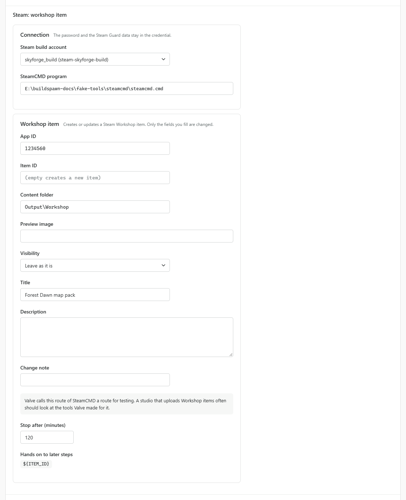

Steam: workshop item
Create or update a Steam Workshop item from a folder of files.
When to use it
Use it when you publish mods or content packs to the Steam Workshop from a build. Only the fields you fill in are changed, so you can update the files and leave the title alone.
Valve calls this route of SteamCMD a route for testing. A studio that uploads Workshop items often should look at the tools Valve made for it.
How to set it up
- Open the build configuration and go to Settings › Build steps › Add build step › Steam: workshop item.
- Choose the Steam build account.
- Type the App ID. For a new item leave Item ID empty and fill in Content folder.
- Fill in the other fields you want to set. Click Save.

Every field
| Field | What it does | Default | Example |
|---|---|---|---|
| Steam build account | The credential to sign in with. It must be allowed to publish to the app. | None | steam-build |
| SteamCMD program | Path of SteamCMD. | Found on the agent | D:\tools\steamcmd\steamcmd.exe |
| App ID | Your app number. | None | 1000480 |
| Item ID | The Workshop item to update. Empty creates a new item. Must be a number. | Empty (new item) | 2841190077 |
| Content folder | Folder with the item's files. A new item needs it. | Empty | Workshop/PackA |
| Preview image | Picture shown on the item's page. | Empty | Workshop/preview.png |
| Visibility | Leave as it is, Public, Friends only, Private or Unlisted. | Leave as it is | Private |
| Title | Item title. | Empty | Skyforge Starter Pack |
| Description | Item description. | Empty | New skins for the hangar. |
| Change note | Note for this update. | Empty | Build %build.number% |
| Stop after (minutes) | Stops the step after this time. | 120 | 60 |
| Hands on to later steps | ITEM_ID: the item's ID, also after it was created. | Not editable |
A worked example
Publish a content pack for Skyforge as a private item to test it. Set Content folder to Workshop/PackA, Visibility to Private, Title to Skyforge Starter Pack and leave Item ID empty. Later builds set Item ID to the number from the first run and only the content folder changes.
What you see when it runs
- The Steam sign-in lines, then SteamCMD output.
- Step output ITEM_ID = …. Copy that number into Item ID for later updates.
Problems and fixes
| Message | What to do |
|---|---|
| The item ID … is not a number | Type digits only, or leave it empty for a new item. |
| A new item needs a content folder | Fill in Content folder. |
| Steam did not report the ID of the item | Read the SteamCMD output above it. Check that the account may publish to the app. |
| Steam asked for a Steam Guard code | Sign in again on the credential. |